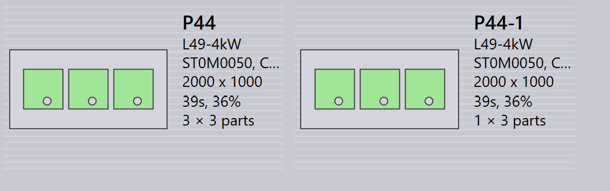

Sijoittelupaneeli
Tässä osiossa kuvataan sijoitteluun liittyviä toimintoja, kuten Send to machine, Recall from machine, Export outputs, Mark complete, Add parts…, Adapt/Compact…, Split layout ja muita vaihtoehtoja, joita käytetään sijoitteluinstanssien hallintaan.

|
|
Send to machine
-
Kun nestaus on valmis (täytetty tai kiireellisesti tarvittu), voit lähettää sen koneelle.
-
Napsauta nestausta hiiren oikealla painikkeella ja valitse Send to machine….
-
Kansio luodaan automaattisesti, ja se nimetään nestauksen mukaan.
-
Tulostiedostot (fxlyt, NC, raportti, csv) vietään työn tulostesijaintiin.
-
Koneelle lähetetyt nestaukset näytetään sinisellä rastimerkillä.
| Vapautettuja nestauksia ei enää yritetä uudelleenpakata. |
Recall from machine
-
Jos tulos vaatii vahvistusta tai päivitystä (esimerkiksi lisäosien lisäämistä):
-
Napsauta vietyä sijoittelua hiiren oikealla painikkeella.
-
Valitse Recall from machine….
-
-
Tulostiedostot ja kansio (fxlyt, NC, raportti, csv) poistetaan.
-
Nestaus muuttuu jälleen muokattavaksi.
-
Voit tehdä muutoksia ja lähettää sen jälleen koneelle.
Export outputs
-
Napsauta mitä tahansa koneelle lähetettyä sijoittelua (nestausta) hiiren oikealla painikkeella ja napsauta Export outputs.
-
Export Outputs -vaihtoehto vie NC-, raportti- ja sijoittelutiedostot vastaaviin koneen tulostekansioihin.
-
Tämä vaihtoehto luo NC-tiedoston uudelleen sijoittelun nykyisillä yksikköasetuksilla.
| Export Outputs ei ole käytettävissä sijoitteluille, jotka ovat Completed, eikä sijoitteluille, jotka odottavat jonossa uudelleenpakkausta. |
Merkitse valmiiksi
-
Kun nestaus on käsitelty koneella, napsauta nestausta hiiren oikealla painikkeella ja valitse Mark complete….
-
Voit valita useita nestauksia ja merkitä ne valmiiksi samanaikaisesti.
-
Kun nestaus merkitään valmiiksi:
-
Se himmennetään, siirretään luettelon loppuun ja näytetään vihreällä rastimerkillä.
-
Sijoittelu poistetaan aktiivisten sijoittelujen luettelosta.
-
Osan ja työn tilat päivitetään, ja käsitellyt määrät siirtyvät valmiiseen tilaan.
-
Kyseisen sijoittelun tulostiedostot poistetaan koneen tulostesijainnista kaksinkertaisen käytön välttämiseksi.
-
Add parts…

-
Käytä tätä vaihtoehtoa lisätäksesi osia suhteellisen huonosti pakattuun sijoitteluun. Kuten interaktiivinen nestaus, tämä on ohjatun toiminnon avulla toimiva vaihtoehto, ja sitä voidaan käyttää yhteen tai useampaan sijoitteluun samanaikaisesti.
-
TruSmartCAM liittää sijoittelun uudelleenpakkauksen ohjatun toiminnon päätyöalueelle, kun tätä vaihtoehtoa käytetään. Pidä Ctrl-näppäintä pohjassa ja valitse yksi tai useampi sijoitteluun pakattava osa ja paina Next.

-
Valitut osat näytetään seuraavassa vaiheessa muokattavalla määräsarakkeella. Päivitä osien määrät tarvittaessa Update Qty -kentässä. Napsauta Next jatkaaksesi nestaukseen. Huomaa, että määriä voidaan vain lisätä, ei vähentää.
-
Kaikki sijoittelut nestataan erikseen, ja nestatut tulokset näytetään vastikään pakatuilla osilla niihin sijoitettuina. Sijoittelun valitseminen näyttää kaikki olemassa olevat sijoittelun osat. Tulos hylätään automaattisesti, jos uutta osaa ei sijoiteta uudelleenpakkauksen aikana. Useita kopioita sisältävä sijoittelu voi tuottaa erilaisia kuvioita uudelleenpakkauksen jälkeen.
Adapt/Compact…
-
Tätä ohjattuun toimintoon perustuvaa komentoa voidaan käyttää sijoittelun mukauttamiseen koneelta toiselle, kun alkuperäinen kone on poissa käytöstä tai kun koneen työkuormaa on tasapainotettava.

-
Sitä voidaan käyttää, kun suunniteltu levy on loppunut varastosta ja sijoittelu on suunniteltava uudelleen toiselle käytettävissä olevalle levylle.
-
Voit yhdistää pienemmille levyille pakatut sijoittelut suuremmille levyille materiaalin käyttämiseksi tehokkaammin.
-
Voit jakaa suuremmille levyille pakatut sijoittelut pienemmille levyille, jos suuria levyvarastoja ei ole käytettävissä.
-
Voit parantaa useiden sijoittelujen (jopa eri koneilta) pakkaustehokkuutta yhdistämällä ne yhteen.
-
Käyttääksesi sitä valitse yksi tai useampi sijoittelu ja napsauta Adapt/Compact… avataksesi ohjatun toiminnon työalueelle.

-
Vasen ruutu näyttää kaikki valitut sijoittelut ja Parts-ruutu näyttää sijoittelun osat.
-
Valitse kohdekone ja levymateriaali ja napsauta sitten next suorittaaksesi uudelleennestauksen.
-
Uudet nestaustulokset näytetään tulosruudussa.
-
Napsauta next tallentaaksesi mukautetun tai tiivistetyn sijoittelun.

Sijoittelun jakaminen
Split layouts… -vaihtoehdon avulla voit jakaa olemassa olevan sijoittelun useaan sijoitteluun muuttamalla määriä ilman, että työstöjä tai nestausta tarvitsee tehdä uudelleen.
Tämä ominaisuus on erityisen hyödyllinen seuraavissa tilanteissa:
-
Kun sinun on tuotettava osa kokonaismäärästä välittömästi ja aikataulutettava jäljellä oleva määrä myöhempää tuotantoa varten.
-
Kun tuotantovaatimukset on jaettava useille vuoroille tai päiville työnkulun ja resurssien käytön optimoimiseksi.
-
Kun tietty kone on tilapäisesti poissa käytöstä tai varattu, ja sinun on säädettävä sijoittelua nykyisten tuotantorajoitusten mukaan.
Jakaaksesi sijoittelun suorita seuraavat vaiheet:
-
Valitse Layouts-näkymästä haluttu sijoittelu.

-
Napsauta Split layouts….
-
Anna vaadittu arvo kohdassa New Copies.

-
Napsauta OK.

Valittu sijoittelu on nyt jaettu kahteen sijoitteluun säädetyillä määrillä.